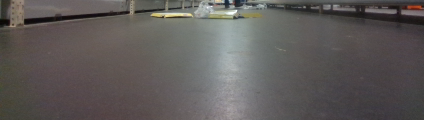

System to detect and localise garbage on the floor
Raúl Lázaro Sánchez
Diepenbeek, BE
June 2019
Abstract
ACRO is a research group that is part of the Department of Mechanical Engineering of KU Leuven and is located in the Technology Center on the Diepenbeek campus. ACRO mainly focuses on the fields of vision and robotics and offers support to companies to integrate these technologies into their applications. One of these companies, Colruyt Group, is the largest supermarket chain in Belgium, desires to automate the cleaning processes of its stores. Nowadays, the cleaning of the floors of supermarkets is a tedious process and is currently done by human labour. First, employees have to clean the floor and remove dust and objects. Then, a scrubbing machines is employed to scrub the floor. Colruyt Group is already looking for a way to automate the scrubbing machines, but the floor is required to be free of any objects before scrubbing. The purpose of this work is to build a proof of concept of a system that detects and locates garbage on the floor of the supermarket to pick it up in a later stadium. The system should be mountable on any autonomous mobile platform that uses ROS. In this work, the TurtleBot3 has been used as a mobile platform on which a RGBD camera has been installed. For the detection of garbage, several vision methods have been integrated and compared, such as morphological operations, segmentation based on different color spaces, comparison of images and depth camera information. This project allows to demonstrate that is possible the automation of this process as well as serving as a basis for future works.
1 Introduction
1.1 Background
1.1.1 Introducing ACRO
The ACRO research group (Automation, Computer Vision and Robotics) is part of the Mechanical Engineering Department at KU Leuven and is located in the Technology Center on the Diepenbeek campus.
The main research topics of ACRO lies in the fields of vision and robotics, combining them in an innovative and effective way to offer solutions where previously they were not possible.
They offer support to other companies to integrate these technologies in their applications.
The ACRO team provides official courses in PCL programming, as well as supervises master theses, from the educational program Electromechanics/Automation within the faculty of Engineering Technology, hosted jointly by Ku Leuven and UHasselt.
ACRO focuses on applications oriented to industrial research in the fields of automation and robotics. Current research topics include:
- Vision-based and model-based automation
- Human-robot interaction and collaboration
- Flexible product handling and robotic grippers
- Collision-free trajectory generation and navigation
- Semi-autonomous and autonomous (dis)assembly
- Functional programming for robotics and the cloud
1.1.2 Introducing Colruyt Group
Colruyt Group is a Belgian multinational family distribution company that rules the Colruyt supermarkets that started in Lembeek, near Halle, Belgium.
Founded in 1925, the group today is known for its discount supermarket chain. Colruyt’s headquarters are based in Halle and they operate in the Benelux and France.
The group’s main business is its Colruyt discount supermarket stores. They have more than 200 locations in Belgium, it is the largest supermarket chain.
Colruyt Group can actually be divided into the logistics area (stores and warehousing) and the research and development department where they perform research mainly in the field of map building and mobile robotics.
1.2 Problem description
Colruyt Group desires to automate the cleaning processes of its stores, specifically the cleaning of floors.
Nowadays, the process of cleaning the stores is performed manually: employees first clean the floor of dust and objects, and then pass the machines that scrub the floor.
The technology to clean the dust is surpassed with current autonomous vacuum cleaner robots.
Colruyt Group is already looking for a way to automate the scrubbing machines, but the floor is required to be free of any objects before scrubbing.
The purpose of this work is to build a proof of concept of a system that can be mounted on an autonomous mobile platform, to detect and localise garbage on the floor (inside a supermarket), and then to pick up the garbage.
The work done in this project is a first approach and serves as a basis for future work and also demonstrate that is possible the automation of this process.
1.3 Contributions
The contributions of this thesis lie in studying the state of the technologies necessary for the development of the project, testing different techniques and making decisions based on the results, always with the support of ACRO.
The topics in which this project contributes the most are:
- Automated camera laser scanner calibration
- A technique based on vision to detect dirt on a floor
- Made a test facility and tested the approach in a test environment
1.4 Summary of chapters
This is a brief outline of what went into each chapter. Chapter 2 explains the literature that have been read and discuss the interesting topics. Chapter 3 discusses the implementation of the techniques to detect the dirt. Chapter 4 talks about the camera calibration. Finally Chapter 5 shows the results and conclusions.
2 Literature survey
2.1 Introduction
For the development of this project, I searched and read some documentation and research papers. In this chapter, I will discuss and comment the interesting topics as well as the implementation them in the project.
I have searched for related projects, but it is a very specific problem, so there are not many projects that deal with it, that is why I have extended the research to any project related to autonomous platforms that recognize objects in dynamic environments.
The projects found use different technologies, either individually or combining them, such as cameras, distance sensors, machine learning…
I was also read traversability analysis papers, in which could read about different type of maps, how to create them and their uses.
2.2 Vision methods
One of the related projects that inspires me was (Robotis-Japan 2019)1 that is a:
“Sample repository for creating a three dimensional map of the environment in real-time and navigating through it. Object detection using YOLO is also performed, showing how neural networks can be used to take advantage of the image database stored by RTAB-Map and use it to e.g. localize objects in the map.”
It uses the Turtlebot3 platform to which a RGBD camera has been installed, using the images of the cameras to recognize objects with the YOLO neural network (Redmon et al. 2016) and the depth image to position the objects on the map. In this project we can see the implementation of different techniques in a combination way.
So at first my attention was focused on using the information from the cameras to detect garbage based on computer vision, a field already known by my. The first idea was to try to recognize the garbage making tests in Matlab and later using the Opencv library.
2.3 Traversability analysis methods
One of the most interesting papers about traversability analysis was (Guerrero et al. 2015). It talks about the different type of maps, how to create them and their uses.
Coming up next the types of maps found will be detailed, we will also talk about being able to integrate them into this project and its pros and cons.
2.3.1 Occupancy map:
It is one of the most used methods for terrain mapping. Every cell in an occupancy map contains an occupancy probability which is used to determine if the cell is free, occupied or not explored. Figure depicts an example of an occupancy grid map.

This is the kind of maps you can create with the Turtlebot3 right out of the box, just using odometry and laser information. Is very useful using them for the autonomous navigation of robots in plane floors and controlled environments.
2.3.2 Elevation map:
Alternatively to the occupancy map, an elevation map is a 2D grid in which every cell contains height values of the terrain mapped. Figure is an example of an elevation map.
Elevation maps are also known as 2.5D maps. Similarly to the occupancy map, the computational requirements are not so important as for 3D mapping. An important disadvantage of 2.5D mapping is the fact that overhanging structures will be considered as obstacles.
They are very useful for moving robots in on uneven floors or to determine obstacles on the way. They are the most usable for the purpose of this project.
I found a ROS package2 to create elevation maps with robots which are equipped with a pose estimation (e.g. IMU & odometry) and a distance sensor (e.g. structured light (Kinect, RealSense), laser range sensor, stereo camera).
This package is based on the works of the papers (Fankhauser et al. 2018) and (Fankhauser et al. 2014) that I have also read.
2.3.3 3D map:
Figure depicts an example of 3D map.
They are a type of maps more complete and easy to observe but at the same time they are difficult to obtain and manage given their high computational requirement.
For 3D mapping I found several package in ROS to create them with different approach, such as (Hornung et al. 2013 )3 or (Labbé & Michaud 2019).4
2.4 Conclusions
Finally we noticed two clear ideas to apply in our project to recognize objects on the floor:
Image processing (OpenCV, neural networks…).
Using depth camera info to create different elevation maps of the terrain.
In our case, a combination can be used by placing the 3D camera pointing to the ground, being able to detect the objects by distance and using OpenCV based on colors and shapes.
3 Implementation of dirt detection
3.1 Introduction
In the following sections I will detail the work carried out during these months, detailing all the decisions taken.
This time could be divide in three different stages:
- Learning
- Learning ROS
- Knowing Turtlebot3
- Get and analysis data
- Preparing robot with 3D camera for scanning the store
- Analysis
- Test different techniques
- Processing of images (detecting objects)
- Positioning objects (get angle and distance)
- Put markers on the map
- Build elevation map
- Try to remove parts of the image that are fixed objects
3.2 Learning ROS
ROS is a flexible framework for software development for robots that provides the functionality of an operating system.
It is a collection of tools, libraries, and conventions that aim to simplify the task of creating complex and robust robot behavior across a wide variety of robotic platforms.
ROS provides the standard services of an operating system such as hardware abstraction, control of low-level devices, implementation of commonly used functionality, passing of messages between processes and maintenance of packages.
It is based on a graph architecture where the processing takes place in the nodes that can receive, send and multiplex messages from sensors, control, states, schedules and actuators, among others. The library is oriented for a UNIX system (Linux).
I passed the first two weeks of the project learning it. Firstly, I installed Ubuntu 16 and ROS Kinetic following the instructions of the documentation.5
I have installed it in a virtual machine using the free VirtualBox software, that was because it is easier, faster, and more flexible for me, I only have to problems:
- Loss of performance.
- Need to change the network configuration of the virtual machine in order to properly connect with Robots.
- Use “Bridge Mode”.
Finally, with everything installed and working, I have followed all the beginner tutorials6 of the documentation and code small programs to test.
3.3 Knowing Turtlebot3

TurtleBot3 is a small, affordable, programmable, ROS-based mobile robot for the use in education, research, hobby, and product prototyping.
The TurtleBot can run SLAM(simultaneous localization and mapping) algorithms to build a map and can drive around in a room. Also, it can be controlled remotely from a laptop.
I received a ROS and Turtlebot3 workshop in which I started controlling the robot and testing all of its functionalities.
Then I followed all the tutorials of the Turtlebot3 e-Manual7 emphasizing on the part of the creation and the usage of the maps. As well as testing autonomous navigation programs.
Continuing with my learning of ROS and Turtlebot3 I code some programs:
- I modified the simple_navigation_goals.cpp program8 to use coordinates relatives to the map.
- I followed the markers tutorial9 to create a subscriber node that can be used to notify the garbage in the map.
3.3.1 Modifications
For the goals of this project we need to add some sensors to the Turtelbot. We decided to use one RGBD camera. The chosen one was the Intel Realsense d435.
In order to use the camera with the TurtleBot3 I need to compile the drivers in the own Raspberry Pi of the robot. The realsense drivers are downloaded without compiling and then they were compiled following the steps of the guide10 but problems emerged.
Firstly, a power supply must be used given the time it takes to perform the compilation.
The compilation will fail due to the lack of ram memory of the Raspberry Pi, I had to create a 2Gb swap partition following this steps.11 With this I was able to compile it perfectly.
The next step was to download the necessary ROS package12 into the workspace of the Raspberry Pi, compiled and finally tested the camera. I initialized the camera with the launch file rs_camera.launch.
There is a problem, the camera requires a usb 3.0 connection for the large amount of data handled, and the raspberry pi uses usb 2.0 so the resolution and frame rate must be lowered. I modified the launch file and use a resolution of 424x240 and 15 fps.
I place the camera on the front, in the third level of the TurtleBot3, fixed by a 3D printing custom camera screw.13
I also created routines to easily start everything when scanning the store using aliases:
| Alias | Where execute | Description |
|---|---|---|
| bringup | [TurtleBot] | Robot and camera initialization. |
| uclock | [Remote PC] | Synchronize internal CPU clocks of the robot and PC. |
| slam | [Remote PC] | Start creating the map. |
| bag | [Remote PC] | Start record bag file. |
| teleop | [Remote PC] | Start teleoperation node to control remotely the robot. |
| savemap | [Remote PC] | Save the map created. |
3.4 Results of the mapping
With the robot prepared and the map creation tested we were invited to one of the Colruyt Group stores to collect data.
We went through two corridors with the robot twice, a first without garbage to create the map mainly, and a second one with garbage on the ground.
Next, I will analyze the information obtained and discuss the methods used to recognize garbage.
3.4.1 Image of the color camera:
In this image we see that the interesting part, where the floor is located, is the lower half of the image.
The most interesting is the dark and uniform color of the floor, except for the reflected shine of the lamps.
If it is possible to eliminate the brightness, it should be relatively easy to distinguish brightly colored objects from the dark ground.
3.4.2 Image of the depth camera:
This image is created with the depth information, in it the blue areas are closer and the red ones are farther away. I can see a problem, most of the lower half of the image, the one belonging to the ground and interesting to us, appears as a large blue spot in which I can not distinguish any object.
I have investigated the reason for this and has been concluded that the position of the camera is not ideal for being very close to the ground. In the specifications of the camera has been observed that there is a minimum range and maximum distance for usage of the camera. If the object is closer than the minimum will not be differentiable.
The camera should be placed in a higher position and away from the ground to solve this problem and be able to use the depth information.
3.4.3 Map:
This is the map created in the first pass without garbage. It is quite well built and only a simple processing will be necessary to eliminate the noise and complete it.
3.5 Implementation of the computer vision algorithm
I start working in two objectives:
- Remove brightness.
- Recognize objects of different color to the ground.
I take frames of the recorded video and use Matlab for processing it. I use two apps of Matlab:
3.5.1 Color threshold:
With this app I can apply threshold to the images in different space of colors (RGB, HSV…) and based on the histogram.
I started working to recognise the garbage. The idea is to end with a binary image where white points are garbage and the rest will be black.
I tested different ways of binarizing the image based on the color. The most effective way is to change points with the highest RGB values to white and the rest to black, I tried different thresholds.
I apply color threshold to all the RGB channels of the image in different frames and test:
In this image the threshold is fixed in the point that almost only the garbage appears in white, but some objects like plastics are a problem.
In the next image I lowered the threshold, now the plastics are more visible but the reflected shine of the lamps on the floor also appears.
3.5.2 Morphological operations:
With this app I can test different morphological operations in the images.
I have read about the different operations in the (OpenCV 2019).14
Morphological transformations are some simple operations based on the image shape. It is normally performed on binary images. It needs two inputs, one is our original image, second one is called structuring element or kernel which decides the nature of operation.
Working towards eliminating the brightness of the image floor, several morphological transformations are tested.
One of them is Top Hat, it is the difference between input image and opening of the image. Below example is done for a 9x9 kernel.

Opening is just another name of erosion followed by dilation. It is useful in removing noise.

- Top Hat = source image - opening of source image
- Opening = erosion of source image -> dilation of source image
- Erosion = erodes away the boundaries of foreground object
- Dilation = It is just opposite of erosion
- Opening = erosion of source image -> dilation of source image
| Original | Erosion | Dilation |
|---|---|---|
 |
 |
 |
I discovered that using Top Hat, the floor has a more uniform tone without losing much information of the rest so it can be used to create a mask and eliminate the problem of the floor, leaving an image in which the usage of segmentation based on colour can be performed more easy.
I applied a blur filter to reduce noise, with a kernel 3x3 aperture.
Top Hat is applied to the gray scale image and then it is binarised using the Otsu algorithm (Otsu 1979) to define the threshold.
I have tested with different structural elements to apply Top Hat. A disc of 15px diameter is the finally choosen for the algorithm.
Then, the morphological transformations, open and dilate, have been used to remove additional noise and increase the mask.
With all this tested I passed the program to ROS and OpenCV. I create a node that subscribes to the topic of the camera, converts it to be used in OpenCV and publishes the position of the detected garbage to mark it on the map.
Example code of a ROS node that subscribes to an image and convert it with cv_bridge to be able to use it in OpenCV:
int main (int argc, char **argv)
{
ros::init(argc, argv, "img_processing");
ros::NodeHandle n;
image_transport::ImageTransport it(n);
image_transport::Subscriber sub = it.subscribe(
"/camera/color/image_raw", 1, imageCallback);
ros::spin();
}
void imageCallback (const sensor_msgs::ImageConstPtr& msg)
{
cv_bridge::CvImagePtr cv_ptr;
try
{
cv_ptr = cv_bridge::toCvCopy(msg,
sensor_msgs::image_encodings::BGR8);
}
catch (cv_bridge::Exception& e)
{
ROS_ERROR("cv_bridge exception: %s", e.what());
return;
}
// Image Processing
cv::Mat dImg = cv_ptr->image;
...This will be the main program to process the image, it should process the image, first create the Top Hat masked image and then apply color threshold based on the RGB color space.
3.6 Positioning objects
The next step was to isolate each object and calculate the relative position respect to the robot and later transform to map coordinates.
I have created a service that receives the X, Y coordinates of the center pixel that belongs to the object in the image and return the position.
I came up with two methods.
3.6.1 Angle and distance:
For calculating the angle, I used a simple formula based on the field of view of the RGBD Camera Intel Realsense d435: 85.2° x 58° (+/- 3°)
\(angle=\frac{85.2}{\frac{imageWidth}{2}} \cdot X - 85.2\)
For the distance I use the depth camera info, activating the feature to align the depth image with the color image.
roslaunch realsense2_camera rs_camera.launch align_depth:=true
3.6.2 Point Cloud:
If I start the camera with the command roslaunch realsense2_camera rs_camera.launch filters:=pointcloud a point cloud will be published. This point cloud is of type unorganised, which is a one row array of points. Because of the unorganised representation, the calculation of a point that corresponds to a certain pixel in the colour image, becomes difficult.
For getting a organized point cloud data that uses 2D array of points with the same size of the color image I should start the camera with the command roslaunch realsense2_camera rs_rgbd.launch. That one uses the color and depth image to create the point cloud using the ROS package rgbd_launch.
With this point cloud I could get the coordinates respect to the camera of each pixel of the image easily. This was the method that I finally use to position the objects.
Example code of a ROS node that subscribes to an PCL calc the point that corresponds to a certain pixel:
int main (int argc, char **argv)
{
ros::init(argc, argv, "map_marker");
ros::NodeHandle n;
ros::Subscriber sub = n.subscribe<sensor_msgs::PointCloud2>
("/camera/depth_registered/points", 1, callback);
ros::spin();
}
void callback(const sensor_msgs::PointCloud2ConstPtr& msg)
{
my_pcl = *msg;
int arrayPosition = v*my_pcl.row_step + u*my_pcl.point_step;
int arrayPosX = arrayPosition
+ my_pcl.fields[0].offset; // X has an offset of 0
int arrayPosY = arrayPosition
+ my_pcl.fields[1].offset; // Y has an offset of 4
int arrayPosZ = arrayPosition
+ my_pcl.fields[2].offset; // Z has an offset of 8
float X = 0;
float Y = 0;
float Z = 0;
memcpy(&X, &my_pcl.data[arrayPosX], sizeof(float));
memcpy(&Y, &my_pcl.data[arrayPosY], sizeof(float));
memcpy(&Z, &my_pcl.data[arrayPosZ], sizeof(float));
ROS_INFO("%f %f %f", X,Y,Z);
...4 Camera calibration
4.1 Introduction
I need to calibrate the camera position in the robot to transforms the coordinates correctly.
In this chapter I will resume the methods that I have found to calibrate the camera as well the results that were obtained.
An important point is to know the concepts of intrinsic and extrinsic parameters of a camera.
- Intrinsic:
- Focal length
- Principal point
- Skew
- Radial distortion
- Tangential distortion
- Extrinsic:
- Translation vectors
- Rotation vectors
The extrinsic parameters denote the coordinate system transformations from 3D world coordinates to 3D camera coordinates. Equivalently, the extrinsic parameters define the position of the camera, these are the important ones for our purpose.
Another important point to keep in mind is to know the system of axes that each method uses to be able to interpret them correctly.
| ROS | RADLOCC | OPTICAL |
|---|---|---|
4.2 RADLOCC Toolbox
I have found a Matlab toolbox called RADLOCC15 based on the works of the papers (Kassir & Peynot 2010) and (Peynot & Kassir 2010).
“This paper proposes algorithms that augment two existing trustful calibration methods with an automatic extraction of the calibration object from the sensor data. The result is a complete procedure that allows for automatic camera-laser calibration.”
For using this toolbox I need a special dataset that should contain a set of files:
laser.txtcontaining the laser data, in the formattimestamp angle_min angle_increment angle_max unit_type number_of_points ranges;image_stamps.txtcontaining the timestamps of the captured images;image_XX.bmp, which are the image files, which need to start by the number 01 (and not 00). For example image_01.bmp, image_002.bmp, …
This dataset was exported from ROS using a python script, taking photos with the color camera of a checkerboard in different positions.
The RADLOCC method for getting a calibration was:
- In a directory, extract both RADOCC and RADLOCC Toolkits.
- In MATLAB, add both toolkits to the path.
addpath RADOCCToolboxaddpath RADOCCToolbox\CornerFinderaddpath RADLOCCToolboxaddpath RADLOCCToolbox\Functions.
- Open the dataset as the root.
- The first step is to obtain the intrinsic calibration of the camera and extract the checkerboard planes. To do this, run the
calibcommand. Then follow the steps:Image Namesto set the image names (selectimage_andbforbmp)Extract Grid Corners(press enter for all images)Calibrationto get the intrinsic parametersSave, which saves the calibration to a file in the dataset’s directory (Calib_Results.mat)
- Run the RADLOCC Toolbox. Load both the laser and the image data with
Read Data. Manual Selectto segment the laser. Choose only the more straight and clear parts.Calibrateto run the calibration algorithm. The values appear on the console of MATLAB.Laser into Imageto check the validity of the calibration. If a range of images is what is wanted, then input something like1:10.
The best results obtained have been with a dataset of many images (22) in the highest possible resolution (1280 × 720) and placing the checkerboard plane as close as possible to the camera to capture more points of the laser.
RADLOCC axis \[ \Delta = \begin{pmatrix} 0.0308\\ -0.0652\\ -0.0796\\ \end{pmatrix} \pm \begin{pmatrix} 0.011\\ 0.0136\\ 0.00737\\ \end{pmatrix} m \] \[ \Phi = \begin{pmatrix} -0.105\\ -3.53\\ -179\\ \end{pmatrix} \pm \begin{pmatrix} 1.38\\ 0.615\\ 0.631\\ \end{pmatrix} deg \]
Total rms error = 0.00616
A very large error can be observed for the dimensions that are being measured, this is because the laser is not very precise and does not recognize the plane as a completely straight line of points.
Perhaps this method would be more accurate with a better laser or with post processed laser data that calculates the average of the position of the points during the time that the checkerboard plane is in the same position, avoiding outliers.
The advantage of this method is that it can be used with any type of camera, a RGBD camera is not necessary.
4.3 Point cloud to laser scan and 2D calibration
Other approach for the calibration of the camera is to use the point cloud and the laser sensor. There are several ROS packages to convert a PCL in laser scan data given certain parameters.16
With the two laser scan files, one for the laser and other of the conversion, and tools like in Matlab matchScans17 I could get the X, Y and theta parameters. In this case I need to suppose that the other two rotations are equal to 0 and measure the Z distance to perform the PCL to laser scan conversion at the same height of the real laser.
For this reasons, the lack of precision of the laser seen in the previous method, and the lack of time to implement the algorithms in Maltlab and export the data in a correctly, this method has not been proven.
4.4 Third point method
The problem with the calibrations of the camera is that I can not measure the distance of the hardware by hand because this is not the actual position from which the photo was taken, either by the internal lenses or by the position of the camera in the interior of the frame.
But with a checkerboard and using the Matlab toolbox to calibrate cameras it is easy to get the position with respect to the checkerboard plane, being the origin the first corner.
If I make that point to match with the height of the laser, known by the URDF model of the robot, and the plane is placed parallel to the robot, the transformation between that point and the laser would be equal to 0 in all the axes and angles except in the X axes that would be the measurement given by the laser.
Finally I will have the two transformations, one camera-origin_plane and another origin_plane-laser, that gives us the searched transformation camera-laser.
For the first, I used the Matlab toolbox to calibrate cameras with the same dataset that was used for the RADLOCC method, adding an image with the origin of the plane matching with the laser.
From this method I get this transformation camera-checkerboard:
Optical axes \[ \Delta = \begin{pmatrix} 0.0230\\ -0.0694\\ 0.6606\\ \end{pmatrix} \pm \begin{pmatrix} 0.0004\\ 0.0006\\ 0.0010\\ \end{pmatrix} m \] \[ \Phi = \begin{pmatrix} -0.0186\\ -0.0234\\ 0.0206\\ \end{pmatrix} \pm \begin{pmatrix} 0.0026\\ 0.0022\\ 0.0003\\ \end{pmatrix} rad \]
For the second, the distance to the point has been measured with the laser several times and the average has been made.
ROS axes \[ \Delta = \begin{pmatrix} 0,6044\\ 0\\ 0\\ \end{pmatrix} \pm \begin{pmatrix} 0.001\\ 0.001\\ 0.001\\ \end{pmatrix} m \]
The final laser-camera transformation would be:
ROS axes
\[
\Delta = \begin{pmatrix}
0.0562\\
0.0230\\
-0.0694\\
\end{pmatrix}
\pm
\begin{pmatrix}
0.0020\\
0.0014\\
0.0016\\
\end{pmatrix}
m
\] \[
\Phi = \begin{pmatrix}
0.0206\\
-0.0186\\
-0.0234\\
\end{pmatrix}
\pm
\begin{pmatrix}
0.0178\\
0.0201\\
0.0197\\
\end{pmatrix}
rad
\]
4.5 Conclusions
External calibration of a camera to a laser is a common prerequisite on today’s multi-sensor mobile robot platforms. However, the process of doing so is relatively poorly documented and almost always time-consuming.
For our project I do not currently need this calibration with high precision, so after observing the results of the last method and comparing several measures of laser and PCL, I have chosen to give the calibration as sufficient, documenting all methods in case in the future will be needed.
The final result in the URDF model of the robot is:
5 Results and conclusions
5.1 Introduction
In this part I will comment the results of different test and talk about the conclusions that I have reached in this project.
I will summarize some ideas or techniques that could not be proved due to lack of time and knowledge, the problems encountered will also be detailed and we will discuss how they could be solved.
5.2 Tests
To see the results of the works and programs carried out, I have done different tests.
In this project there are two main parts that have been developed and should be tested, the image processing to detect garbage and the positioning on the map of this garbage.
These two parts have been tested separately under different conditions, this is because the processing of the image to detect garbage is prepared for the conditions of the store (color of the floor, surrounding furniture color, lights) and these are not easy to replicate.
5.2.1 Recognizing
To test how the garbage recognition algorithm works, the recorded data during the visit to one of the stores was used, specifically the recorded by the color camera installed in the robot.
In this recording you can see examples with different types of materials.
The algorithm recognizes most of the garbage with ease and because being in movement, different points of view of the same object are had, reason why if it is not recognized in a frame it is very probable be recognized in another one (especially when it is more centered and near)
Errors are also observed as parts that are recognized as garbage and are not, such as:
- Lines or indications painted on the floor.
- Parts of the furniture of the store that differ greatly from the color of the floor. (racks, legs, …)
- Parts of the image that correspond to very distant things.
Below there are some images collected from the recording as an example of the different situations and materials tested.
| Original | Result |
|---|---|
|  | |
5.2.2 Positioning
To test the positioning of the garbage on a 2D map, a small test facility is built using four wooden boards. With the circuit finished I go through it with the robot and built the map.
As the conditions are different from those of the store (color of the floor, surrounding furniture color, lights) the algorithm to recognize garbage did not work and I had to adjust it (change color thresholds and kernels sizes) to recognize objects only white and thus be able to test the positioning part.
| Test circuit | Map created |
|---|---|
The objective is to recognize and correctly position the different white objects placed by the circuit in the created map.
The algorithms have been thought to run in real time while the robot moves and so it was initially tested. With this first test the results of the following image were obtained.
At first glance one could say that the program failed, marking multiple points that do not correspond to garbage along the entire map, but analyzing why this happened and seeing that some points were correct, some conclusions were reached:
- The noise of the point cloud causes errors in the measurements when positioning.
- The processing of so many algorithms at the same time by the robot added to the large amount of data from the camera and the management of the wifi for the connection exceeds the CPU power of the Raspberry Pi of the Turtlebot3.
- Given this slow processing, the necessary transformations to position the objects on the map are not performed immediately, this causes them to be wrong.
For all these reasons I tried again but this time only executing the code to position garbage with the robot completely stopped and interrupting it when I want to move the robot.
Below are the different stops of the robot and the points that are marked on the map cumulatively at each stop.
| Pose 1. | Pose 2. | Pose 3. |
|---|---|---|
| Pose 4. | Pose 5. |
|---|---|
This time it can be said that the positioning of the garbage has been effective, errors are still observed as the same object is positioned a little different depending on where the object is seen by the robot.
5.3 Future work
Here I will comment, from my point of view, how this project should continue to develop, what should be the topics to investigate and the changes to be made.
Starting with the things that I have lacked time to try, I have two ideas:
The creation of elevation maps with the RGBD camera. I can create a map without garbage and another map containing garbage, perform the subtraction leaving only the different points that should correspond with the garbage, the result can be superimposed with the occupation map to see its position.
In the processing of the image one of the biggest challenges is to isolate the part of the image belonging to the ground, so as not to identify the furniture as garbage. The idea would be to analyze pixel by pixel comparing the information of the position given by the PCL and the situation on the map to determine if it corresponds with parts that should not be analyzed and eliminate that pixel.
One of the first changes that I would make would be the Raspberry Pi of the Turtlebot3, this presents several problems such as the lack of usb 3.0 or higher for a correct communication with the camera, the lack of RAM to compile certain packages and finally the lack of power for run many very demanding nodes in real time.
Another step in this project would be to adapt the algorithm of image processing to recognize garbage to be used in any environment and combine it with more techniques to achieve better results (Other vision techniques, neural networks…)
5.4 Conclusion
The implementation of this project has been based on the application of computer vision techniques almost exclusively. This is due to the lack of time and knowledge to try other techniques, such as those mentioned in the literature analysis about the construction of different kind of maps.
Even so, the work done serves as a first approach and serves as a basis for future work related to this and others that use:
- Recognition of objects in dynamic environments either through image processing or depth cameras.
- Positioning and marking objects on the map.
- Calibration of the camera position in multi-sensor mobile robot platforms.
It also demonstrate that is possible the automation of this process, reducing cost and time for the company.
During the time that I have been developing this project I have learned to handle ROS with some ease and how to handle a robot and integrate new sensors, I have applied and reinforced my knowledge of programming in C++ and OpenCV.
Appendix 1: Code
img_processing.cpp
#include <ros/ros.h>
#include <image_transport/image_transport.h>
#include <cv_bridge/cv_bridge.h>
#include <sensor_msgs/image_encodings.h>
#include <opencv2/imgproc/imgproc.hpp>
#include <opencv2/highgui/highgui.hpp>
#include "detect_garbage/pixel_coordinates.h"
// Global variables
cv::Mat src, src_gray, dst, mask;
int size_top = 15;
int size_dilate = 5;
int size_dilate1 = 5;
int max_size = 100;
int threshold_RGB = 153;
int threshold_Y_min = 0;
int threshold_Y_max = 215;
int threshold_Cb_min = 115;
int threshold_Cb_max = 255;
int const max_threshold = 255;
static const std::string ORIGINAL = "Original";
static const std::string FINAL = "Final";
static const std::string window_1 = "Top Hat";
static const std::string window_2 = "Color RGB Threshold";
static const std::string window_3 = "Color YCrCb Threshold";
void imageCallback (const sensor_msgs::ImageConstPtr& msg);
void tophat(int, void*);
void colorThreshold( int, void* );
ros::ServiceClient *clientPtr; // Pointer for a client
int main (int argc, char **argv)
{
ros::init(argc, argv, "img_processing");
ros::NodeHandle n;
cv::namedWindow(ORIGINAL);
cv::startWindowThread();
image_transport::ImageTransport it(n);
image_transport::Subscriber sub = it.subscribe(
"/camera/color/image_raw", 1, imageCallback);
ros::ServiceClient client = n.serviceClient<
detect_garbage::pixel_coordinates>("pixel_coordinates");
//give the address of the client to the clientPtr
clientPtr = &client;
ros::spin();
return 0;
}
void imageCallback (const sensor_msgs::ImageConstPtr& msg)
{
cv_bridge::CvImagePtr cv_ptr;
try
{
cv_ptr = cv_bridge::toCvCopy(msg,
sensor_msgs::image_encodings::BGR8);
}
catch (cv_bridge::Exception& e)
{
ROS_ERROR("cv_bridge exception: %s", e.what());
return;
}
// Image Processing
cv::Mat dImg = cv_ptr->image;
// Divide in half
src = dImg(cv::Rect(0, dImg.rows/2, dImg.cols, dImg.rows/2));
cv::imshow( ORIGINAL, src );
// Create a matrix of the same type and size as src (for dst)
dst.create( src.size(), src.type() );
// Convert the image to grayscale
cv::cvtColor( src, src_gray, CV_BGR2GRAY );
cv::namedWindow( window_1, CV_WINDOW_AUTOSIZE );
cv::namedWindow(window_2, CV_WINDOW_AUTOSIZE );
cv::namedWindow(window_3, CV_WINDOW_AUTOSIZE );
cv::createTrackbar( "Size Top Hat:",
window_1, &size_top, max_size, tophat );
cv::createTrackbar( "Size Dilate:",
window_1, &size_dilate, max_size, tophat );
tophat(0, 0);
cv::createTrackbar("Threshold RGB:",
window_2, &threshold_RGB, max_threshold, colorThreshold );
cv::createTrackbar("Threshold Y_min:",
window_3, &threshold_Y_min, max_threshold, colorThreshold );
cv::createTrackbar("Threshold Y_max:",
window_3, &threshold_Y_max, max_threshold, colorThreshold );
cv::createTrackbar("Threshold Cb_min:",
window_3, &threshold_Cb_min, max_threshold, colorThreshold );
cv::createTrackbar("Threshold Cb_max:",
window_3, &threshold_Cb_max, max_threshold, colorThreshold );
cv::createTrackbar( "Size Dilate:",
FINAL, &size_dilate1, max_size, colorThreshold );
colorThreshold( 0, 0 );
cv::Mat canny_output;
std::vector<std::vector<cv::Point> > contours;
std::vector<cv::Vec4i> hierarchy;
// Detect edges using canny
cv::Canny( dst, canny_output, 50, 150, 3 );
// Find contours
cv::findContours( canny_output, contours, hierarchy,
cv::RETR_TREE, cv::CHAIN_APPROX_SIMPLE, cv::Point(0, 0) );
// Get the moments
std::vector<cv::Moments> mu(contours.size());
for( int i = 0; i<contours.size(); i++ )
{
mu[i] = cv::moments( contours[i], false );
}
// Get the centroid of figures.
std::vector<cv::Point2f> mc(contours.size());
for( int i = 0; i<contours.size(); i++)
{
mc[i] = cv::Point2f( mu[i].m10/mu[i].m00 , mu[i].m01/mu[i].m00 );
}
// Draw contours
cv::Mat drawing(canny_output.size(),
CV_8UC3, cv::Scalar(255,255,255));
for( int i = 0; i<contours.size(); i++ )
{
cv::Scalar color = cv::Scalar(167,151,0); // B G R values
cv::drawContours(drawing, contours, i, color, 2, 8,
hierarchy, 0, cv::Point());
cv::circle( drawing, mc[i], 4, color, -1, 8, 0 );
// Mark on map
detect_garbage::pixel_coordinates srv;
srv.request.u = mc[i].x;
srv.request.v = mc[i].y+dImg.rows/2;
//dereference the clientPtr
ros::ServiceClient client = (ros::ServiceClient)*clientPtr;
if (client.call(srv))
{
ROS_INFO("x: %f", (float)srv.response.x);
ROS_INFO("y: %f", (float)srv.response.y);
ROS_INFO("z: %f", (float)srv.response.z);
}
else
{
ROS_ERROR("Failed to call service from pixel_coordinates");
}
}
// Show the resultant image
cv::namedWindow( "Contours", CV_WINDOW_AUTOSIZE );
cv::imshow( "Contours", drawing );
cv::waitKey(3);
}
void tophat(int, void*)
{
cv::Mat im;
// Reduce noise with a kernel 3x3
blur( src_gray, im, cv::Size(3,3) );
cv::Mat element = getStructuringElement(
cv::MORPH_ELLIPSE, cv::Size( size_top, size_top ));
// Apply the tophat morphology operation
cv::morphologyEx( im, im, cv::MORPH_TOPHAT, element );
cv::threshold(im, im, 0, 255, CV_THRESH_BINARY | CV_THRESH_OTSU );
cv::Mat element2 = getStructuringElement(
cv::MORPH_ELLIPSE, cv::Size( 3, 3 ));
cv::Mat element3 = getStructuringElement(
cv::MORPH_ELLIPSE, cv::Size( size_dilate, size_dilate ));
cv::morphologyEx( im, im, cv::MORPH_OPEN, element2 );
cv::morphologyEx( im, im, cv::MORPH_DILATE, element3 );
mask = cv::Scalar::all(0);
src.copyTo( mask, im);
cv::imshow( window_1, mask );
}
void colorThreshold( int, void* )
{
cv::Mat im1, im2;
cv::inRange(mask, threshold_RGB,
cv::Scalar(max_threshold, max_threshold, max_threshold), im1);
cv::imshow( window_2, im1);
cv::cvtColor(mask, im2, CV_BGR2YCrCb);
cv::inRange(im2,
cv::Scalar(threshold_Y_min, 0, threshold_Cb_min),
cv::Scalar(threshold_Y_max, max_threshold, threshold_Cb_max), im2);
im2=255-im2;
cv::imshow( window_3, im2);
dst=im1+im2;
cv::Mat element2 = getStructuringElement(
cv::MORPH_ELLIPSE, cv::Size( 3, 3 ));
cv::Mat element3 = getStructuringElement(
cv::MORPH_ELLIPSE, cv::Size( size_dilate1, size_dilate ));
cv::morphologyEx( dst, dst, cv::MORPH_OPEN, element2 );
cv::morphologyEx( dst, dst, cv::MORPH_DILATE, element3 );
cv::imshow( FINAL, dst);
}map_marker.cpp
#include <ros/ros.h>
#include <pcl_ros/point_cloud.h>
#include <pcl/point_types.h>
#include <pcl_ros/transforms.h>
#include <pcl/conversions.h>
#include <pcl/PCLPointCloud2.h>
#include <pcl_conversions/pcl_conversions.h>
#include <visualization_msgs/Marker.h>
#include "detect_garbage/pixel_coordinates.h"
sensor_msgs::PointCloud2 my_pcl;
int count = 0;
bool calc(
detect_garbage::pixel_coordinates::Request &req,
detect_garbage::pixel_coordinates::Response &res);
void callback(const sensor_msgs::PointCloud2ConstPtr& msg)
{
my_pcl = *msg;
}
int main (int argc, char **argv)
{
ros::init(argc, argv, "map_marker");
ros::NodeHandle n;
ros::Subscriber sub = n.subscribe<sensor_msgs::PointCloud2>
("/camera/depth_registered/points", 1, callback);
ros::ServiceServer service = n.advertiseService(
"pixel_coordinates", calc);
ros::spin();
return 0;
}
bool calc(
detect_garbage::pixel_coordinates::Request &req,
detect_garbage::pixel_coordinates::Response &res)
{
ros::NodeHandle nh;
ros::Publisher marker_pub;
int arrayPosition = req.v*my_pcl.row_step + req.u*my_pcl.point_step;
int arrayPosX = arrayPosition
+ my_pcl.fields[0].offset; // X has an offset of 0
int arrayPosY = arrayPosition
+ my_pcl.fields[1].offset; // Y has an offset of 4
int arrayPosZ = arrayPosition
+ my_pcl.fields[2].offset; // Z has an offset of 8
float X = 0;
float Y = 0;
float Z = 0;
memcpy(&X, &my_pcl.data[arrayPosX], sizeof(float));
memcpy(&Y, &my_pcl.data[arrayPosY], sizeof(float));
memcpy(&Z, &my_pcl.data[arrayPosZ], sizeof(float));
ROS_INFO("%f %f %f", X,Y,Z);
res.x = X;
res.y = Y;
res.z = Z;
/*
// TF
tf::Vector3 point(res.x,res.y,res.z);
tf::TransformListener listener;
tf::StampedTransform transform;
try{
listener.lookupTransform("/map",
"/camera_color_frame", ros::Time::now(), transform);
}
catch (tf::TransformException ex){
ROS_WARN("Map to camera transform unavailable %s", ex.what());
}
tf::Vector3 point_bl = transform * point;
ROS_INFO("%f %f %f", point_bl[0],point_bl[1],point_bl[2]);
*/
// Set our shape type to be a sphere
uint32_t shape = visualization_msgs::Marker::SPHERE;
visualization_msgs::Marker marker;
// Set the frame ID and timestamp.
marker.header.frame_id = "/camera_color_optical_frame";
marker.header.stamp = ros::Time::now();
// Set the namespace and id for this marker.
marker.ns = "basic_shapes";
marker.id = count;
// Set the marker type.
marker.type = shape;
// Set the marker action.
// Options are ADD, DELETE, and new in ROS Indigo: 3 (DELETEALL)
marker.action = visualization_msgs::Marker::ADD;
// Set the pose of the marker.
// This is a full 6DOF pose
// relative to the frame/time specified in the header
marker.pose.position.x = res.x;
marker.pose.position.y = res.y;
marker.pose.position.z = res.z;
marker.pose.orientation.x = 0.0;
marker.pose.orientation.y = 0.0;
marker.pose.orientation.z = 0.0;
marker.pose.orientation.w = 1.0;
// Set the scale of the marker -- 1x1x1 here means 1m on a side
marker.scale.x = 0.1;
marker.scale.y = 0.1;
marker.scale.z = 0.1;
// Set the color -- be sure to set alpha to something non-zero!
marker.color.r = 1.0f;
marker.color.g = 0.0f;
marker.color.b = 0.0f;
marker.color.a = 1.0;
marker.lifetime = ros::Duration();
marker_pub = nh.advertise<visualization_msgs::Marker>
("/visualization_marker", 20, 1);
ROS_ERROR("Waiting for subscibers");
while(marker_pub.getNumSubscribers()==0)
{
}
ROS_ERROR("Got subscriber");
marker_pub.publish(marker);
count++;
return true;
}laser_measure.py
#!/usr/bin/env python
import rospy
from sensor_msgs.msg import LaserScan
def callback(msg):
print msg.ranges[270]
rospy.init_node('sub_node')
sub = rospy.Subscriber("/scan", LaserScan, callback)
rospy.spin()collect_data_node.py
#!/usr/bin/env python
import argparse #Read command line arguments
import numpy as np #Arrays and opencv images
import rospy #ros python module
import cv2
from cv_bridge import CvBridge, CvBridgeError
from sensor_msgs.msg import Image, LaserScan
#-----------------------------------------
#--- GLOBAL VARIABLES
#-----------------------------------------
bridge = CvBridge()
cv_image = []
laser_scan = []
image_stamp = []
#-----------------------------------------
#--- FUNCTION DEFINITION
#-----------------------------------------
def ImageReceivedCallback(data):
global cv_image
global bridge
global image_stamp
#print("Received image")
try:
cv_image = bridge.imgmsg_to_cv2(data, "bgr8")
image_header = data.header
image_stamp = data.header.stamp
except CvBridgeError as e:
print(e)
def LaserReceivedCallback(data):
global laser_scan
print("Received laser")
laser_scan = data
#-----------------------------------------
#--- MAIN
#-----------------------------------------
if __name__ == "__main__":
global cv_image
global image_stamp
#---------------------------------------
#--- Argument parser
#---------------------------------------
ap = argparse.ArgumentParser()
ap.add_argument("-p", "--capture_path",
help = "path to the capture folder", default = ".")
args = vars(ap.parse_args())
#---------------------------------------
#--- Intitialization
#---------------------------------------
rospy.init_node('collect_data_node') #ros node init
cv2.namedWindow("Camera", cv2.WINDOW_NORMAL)
h = open('laser.txt','w')
hi = open('image_stamps.txt','w')
image_sub = rospy.Subscriber("/camera/color/image_raw",
Image, ImageReceivedCallback)
laser_sub = rospy.Subscriber("/scan",
LaserScan, LaserReceivedCallback)
#time for the tf listener to receive some transforms
rospy.sleep(rospy.Duration(0.1))
rate = rospy.Rate(100) # 10hz
count = 1
while not rospy.is_shutdown():
#print("One iteration complete")
#cv2.imshow("Camera", cv_image)
key = (cv2.waitKey(20) & 255)
#print("key = " + str(key))
#<timestamp> StartAngleRads AngleIncrementRads
#EndAngleRads RangeUnitType NoAngles [Ranges]
range_unit_type = 3 #for meters
ss_ranges = " ".join(["%.8f" % i for i in laser_scan.ranges])
ss_time = str(laser_scan.header.stamp.secs) + "."
+ str(laser_scan.header.stamp.nsecs)
ss = ss_time + " " + str(laser_scan.angle_min)
+ " " + str(laser_scan.angle_increment) + " "
+ str(laser_scan.angle_max) + " "
+ str(range_unit_type) + " " + str(len(laser_scan.ranges))
+ " " + ss_ranges + "\n"
h.write(ss)
if key == 113: #q for quit
print("Quit")
break
elif key == 115: #s for save
print("Saving image and laser scan number " + str(count))
cv2.imwrite("image_" + str(count) + ".bmp", cv_image)
ss = str(image_stamp.secs) + "." + str(image_stamp.nsecs)
+ " " + str(image_stamp.secs) + "."
+ str(image_stamp.nsecs) + "\n"
hi.write(ss)
count += 1
rate.sleep()
h.close()
hi.close()Bibliography
Fankhauser, P. et al., 2014. Robot-centric elevation mapping with uncertainty estimates. In International conference on climbing and walking robots (clawar).
Fankhauser, P., Bloesch, M. & Hutter, M., 2018. Probabilistic terrain mapping for mobile robots with uncertain localization. IEEE Robotics and Automation Letters (RA-L), 3(4), pp.3019–3026.
Guerrero, J.A. et al., 2015. Towards LIDAR-RADAR based Terrain Mapping for Traversability Analysis. In 2015 IEEE International Workshop on Advanced Robotics and its Social Impacts (ARSO 2015). Lyon, France. Available at: https://hal.archives-ouvertes.fr/hal-01518756.
Hornung, A. et al., 2013. OctoMap: An efficient probabilistic 3D mapping framework based on octrees. Autonomous Robots. Available at: http://octomap.github.com.
Kassir, A. & Peynot, T., 2010. Reliable automatic camera-laser calibration. In Proceedings of the australasian conference on robotics and automation.
Labbé, M. & Michaud, F., 2019. RTAB-map as an open-source lidar and visual slam library for large-scale and long-term online operation. In Journal of Field Robotics. pp. 416–446.
Morgan Quigley, K.C., Brian Gerkey, 2009. ROS: An open-source robot operating system. In Willow garage, menlo park, ca.
OpenCV, 2019. OpenCV documentation. Available at: https://docs.opencv.org/master/index.html.
Otsu, N., 1979. A Threshold Selection Method from Gray-level Histograms. IEEE Transactions on Systems, Man and Cybernetics, 9(1), pp.62–66. Available at: http://dx.doi.org/10.1109/TSMC.1979.4310076.
Peynot, T. & Kassir, A., 2010. Laser-camera data discrepancies and reliable perception in outdoor robotics. In Proceesdings of the ieee/rsj international conference on intelligent robots and systems.
Redmon, J. et al., 2016. You only look once: Unified, real-time object detection. 2016 IEEE Conference on Computer Vision and Pattern Recognition (CVPR), pp.779–788.
Robotis, 2019. Turtlebot3 e-manual. Available at: http://emanual.robotis.com/docs/en/platform/turtlebot3/overview/.
Robotis-Japan, 2019. Turtlebot3 3D-slam using rtab-map with jetson tx2. GitHub repository. Available at: https://github.com/ROBOTIS-JAPAN-GIT/turtlebot3_slam_3d.
YoonSeok Pyo, R.J., HanCheol Cho, 2017. ROS robot programming (en), ROBOTIS Co.,Ltd.
https://github.com/ROBOTIS-JAPAN-GIT/turtlebot3_slam_3d↩︎
https://github.com/ANYbotics/elevation_mapping↩︎
http://octomap.github.io/↩︎
http://introlab.github.io/rtabmap/↩︎
http://wiki.ros.org/kinetic/Installation/Ubuntu↩︎
http://wiki.ros.org/ROS/Tutorials↩︎
http://emanual.robotis.com/docs/en/platform/turtlebot3/overview/↩︎
http://wiki.ros.org/navigation/Tutorials/SendingSimpleGoals↩︎
http://wiki.ros.org/rviz/Tutorials/Markers%3A%20Basic%20Shapes↩︎
https://github.com/IntelRealSense/librealsense/blob/development/doc/installation.md↩︎
https://linuxize.com/post/how-to-add-swap-space-on-ubuntu-18-04/↩︎
https://github.com/IntelRealSense/realsense-ros↩︎
https://www.thingiverse.com/thing:2749041↩︎
https://docs.opencv.org/trunk/d9/d61/tutorial_py_morphological_ops.html↩︎
http://www-personal.acfr.usyd.edu.au/akas9185/AutoCalib/index.html↩︎
http://wiki.ros.org/pointcloud_to_laserscan↩︎
https://es.mathworks.com/help/robotics/ref/matchscans.html↩︎